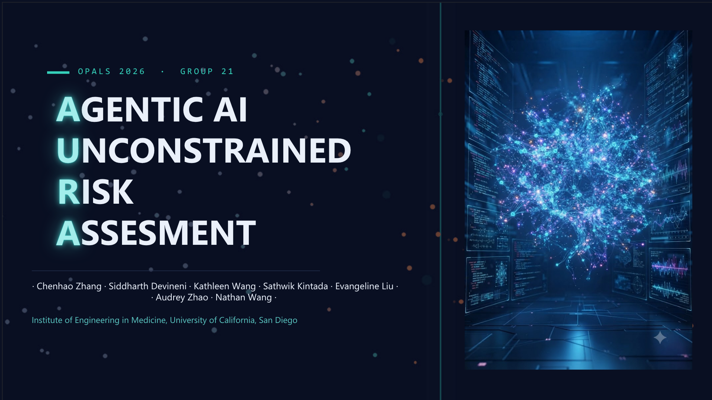

EVANGELINE LIU
“Looking successful is about achievement and status. Being successful is about contribution and character.”
RESEARCH PROJECTS
SciGateway: Runtime Detection and Prevention of Unsafe Tool Use in Autonomous Scientific AI Agents
Outreach Program for Advancing Learning in STEM, Institute of Engineering in Medicine, UC San Diego
Tested and analyzed OpenClaw in a Docker CLI, investigating how the agentic AI responds to various types of threats and poisoning injected into the websites that it interacts with.

Marian Anderson’s Voice for Liberty: Challenging a Revolution, Igniting a Reaction, and Reforming Civil Rights
Senior Group Performance Category, National History Day Competition
California State Champion. Partnered in a team of three to research, write, and produce a 10 minute performance to communicate our in-depth research to an audience and the judges.
A Population Paradox: The Legacy of China’s One-Child Policy
Senior Individual Website Category, National History Day Competition
Regionals Honorable Mention. Researched the background, implementation and impacts of China’s One-Child Policy and built a website to present the findings to a panel of judges. [Visit Website]

COMMUNITY SERVICE
Lighthouse Bible Church
Youth Band Vocalist
Lead bi-weekly music sets for 100+ attendees as part of an 8-piece ensemble, collaborating with fellow musicians to deliver a high-quality experience.
Various Healing and Senior Homes
Volunteer Performer
Perform solo piano and vocal pieces for residents at the Ronald McDonald House and 10+ local senior living centers, using music to build connection, lift spirits, and encourage social engagement for residents.
Helen Woodward Animal Center
Summer Critter Camp JV Aide
Partnered in a team of three to manage fifteen 1st and 2nd grade students, facilitating animal science activities and supervising breaks to ensure a safe and effective learning experience throughout the day. (Though not paid, this was my first real work experience, 37.5 hr/week.)
EMPLOYMENT
Gateways Summer School
Chemistry Aide
Set up lab stations and maintained equipment for classes of twenty 5th and 6th grade students, ensuring a safe and organized learning environment. (This was my first paid job, 20 hr/week.)
EXTRACURRICULAR
Cybersecurity & CyberPatriot
Self-taught in Windows and Linux cybersecurity fundamentals through independent research and technical problem-solving.
Competed in the CyberPatriot National Youth Cyber Defense Competition, where my team achieved Platinum Tier status and ranked in the top one-third of competitors nationwide.
House Leadership
Led a House Family as a mentor and primary point of contact, fostering deeper connections among the students.
Collaborated in leadership teams to plan and coordinate school-wide events.
Commissioned the "Campus Clean" event, overseeing the process from initial ideas through to team-based implementation, ensuring successful execution and student engagement.
Theater & Stagecraft
Experienced performer in several productions; designed and built a custom mechanical snowfall effect for The Little Match Girl production.
Piano
Achieved State Honors for every level of the Music Teachers’ Association of California (MTAC) Certificate of Merit, culminating in the most advanced level in March 2026.
HOBBIES
Technical Arts
Skilled in origami art and 3D puzzle construction requiring high attention to detail and spatial reasoning.